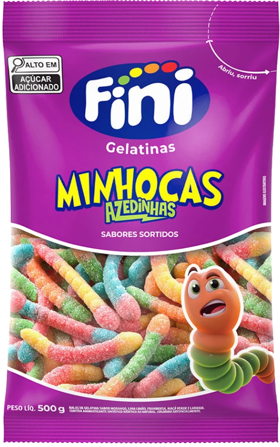
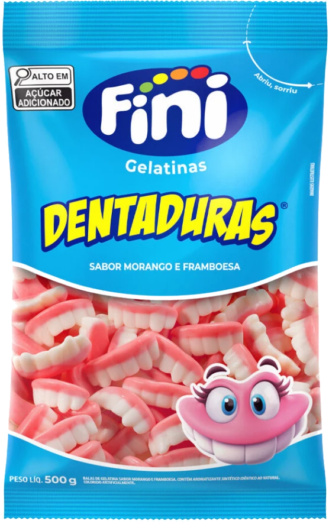
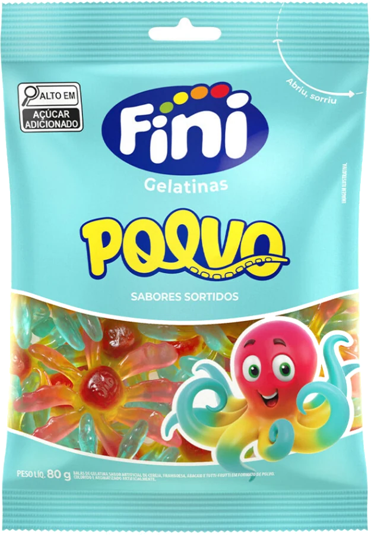
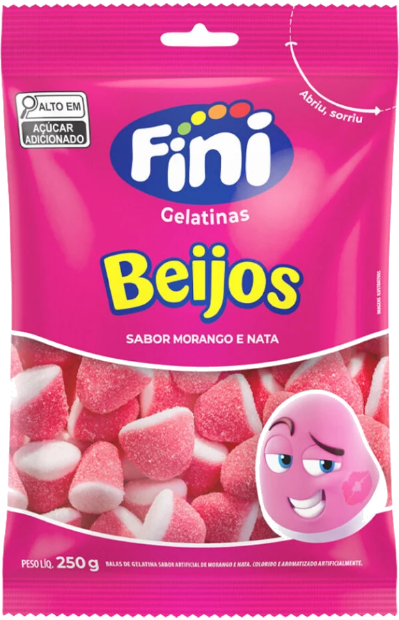
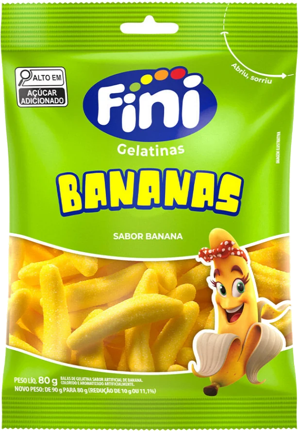
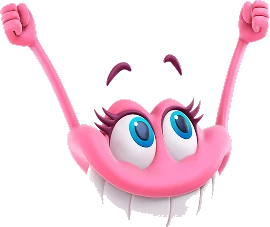
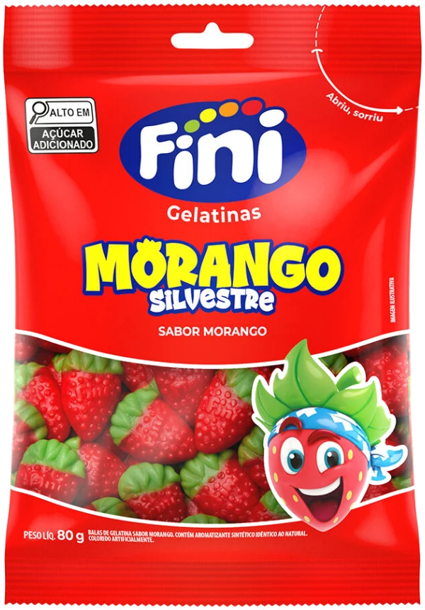
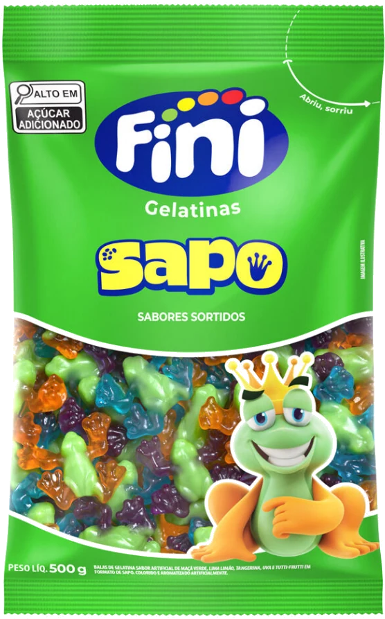
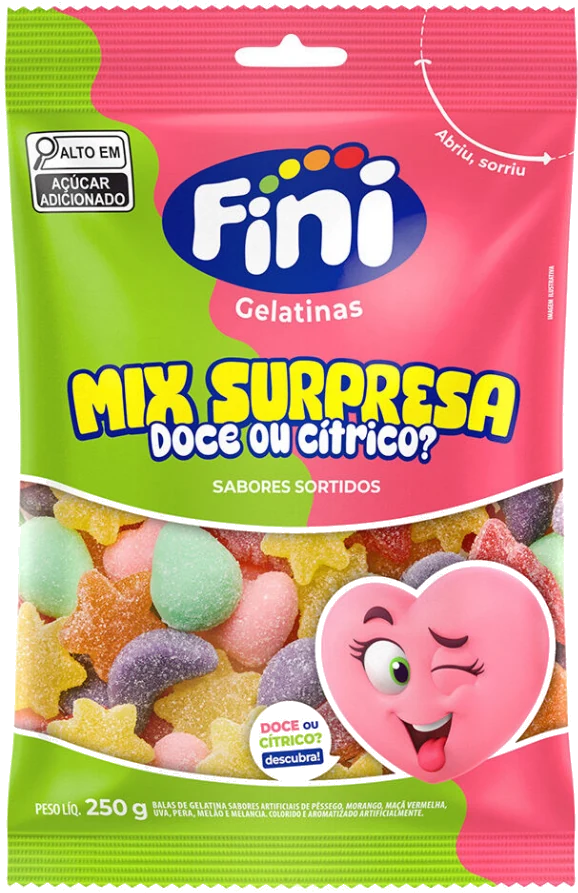
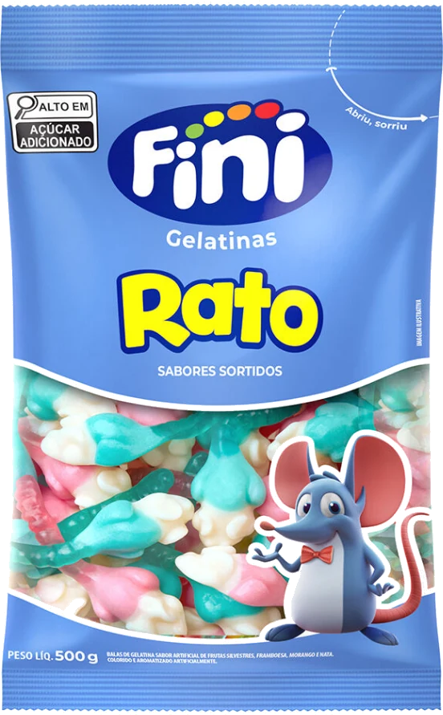

UM MUNDO DE SABORES.ZERO VONTADE DE SER IGUAL.
A vida pede uma pausa divertida.Abriu.
Abriu.
Sorriu.
Tem sabor que muda o dia.
Tem Fini que muda a vibe.

QUE DÁ
UM UAU! um pacote de
boas sensações
01 / MINHOCAS AZEDINHAS
02 / DO SEU JEITO
Escolha sua vibe.
Hoje você tá mais doce
ou gosta de um desafio?
UM ARREPIO BOM.Azedinho.
Azedinho.
Atitude de sobra.
Uma careta, um sorriso e aquela vontade de experimentar de novo. Minhocas Azedinhas: cores e sabores que surpreendem.
Conheça os clássicos EXPLORE. EXPERIMENTE. SORRIA.BORA
ARREPIAR?
ARREPIAR?
03 / ÍCONES QUE A GENTE AMAClássicos.
Clássicos.
Jamais óbvios.
Você reconhece de longe.
E sorri de pertinho.

MORANGO E FRAMBOESA
Dentaduras
O sorriso mais gostoso da turma. Um formato inconfundível que dispensa apresentações.
SORRISO GARANTIDO :)Bem-vindo aolado Fini
lado Fini
da vida.
Mais cor na pausa. Mais graça no caminho.
Mais motivos para compartilhar um sorriso.



aqui, a alegriatem várias formas.

ESPALHANDOSORRISOS :)
05 / MUITO ALÉM DE UMA BALADiversão faz parte
Explore a marca no site oficial
Diversão faz parte
da nossa história.
Formatos que despertam a curiosidade. Sabores que viram lembranças. A Fini transforma pequenos momentos em boas histórias para compartilhar.
1998O início da Fini no Brasil
2001Fábrica própria em Jundiaí, SP
Qual é a sua Fini?
Descubra sua vibe


